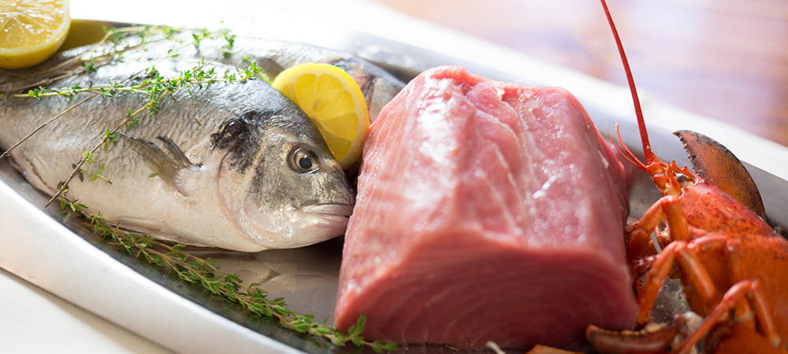
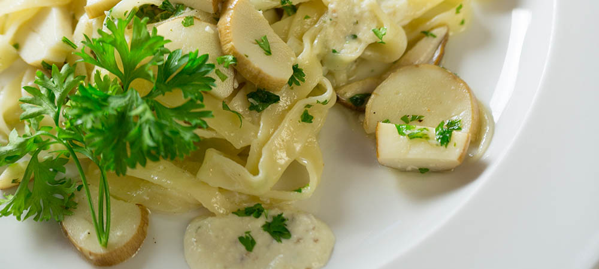
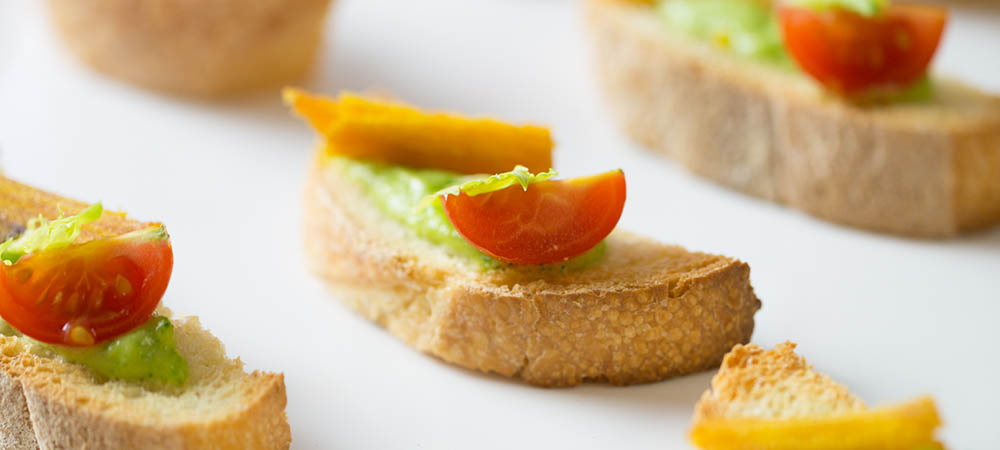
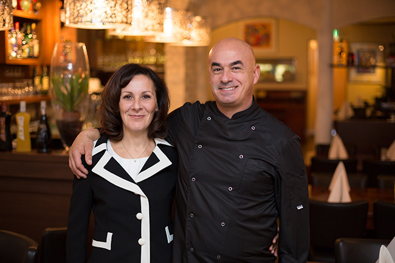
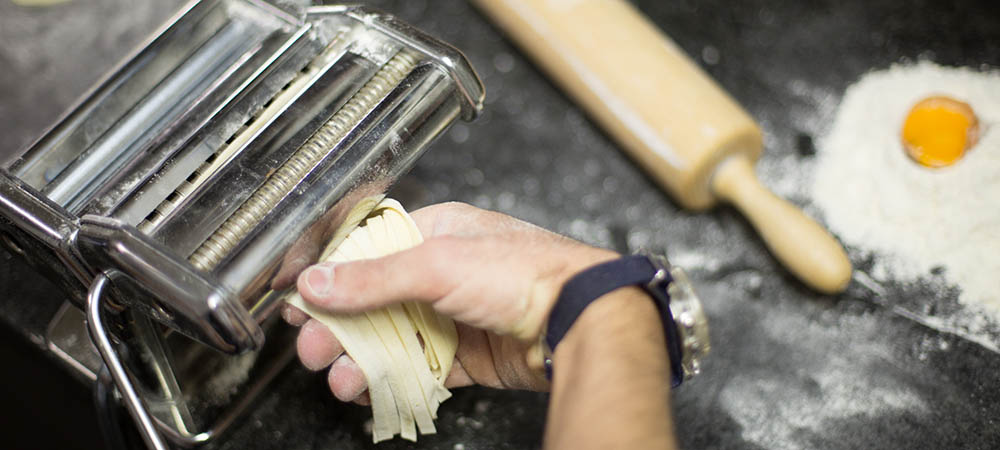
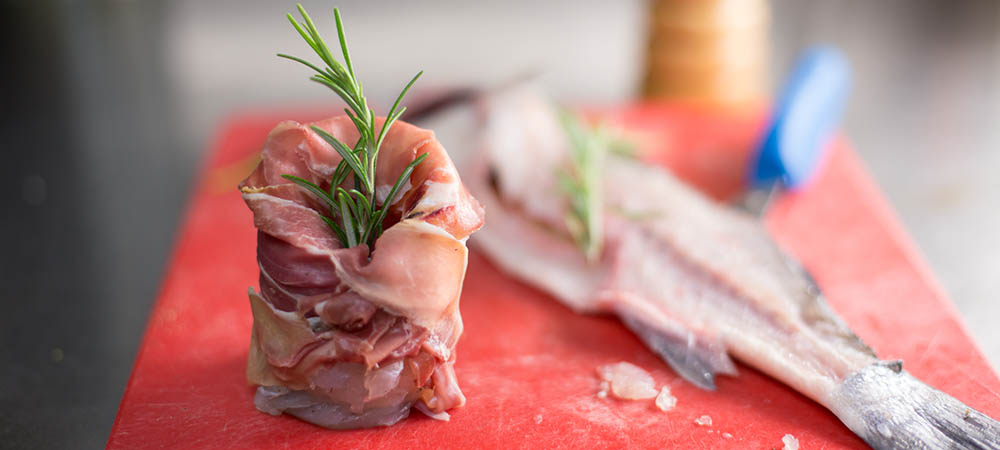
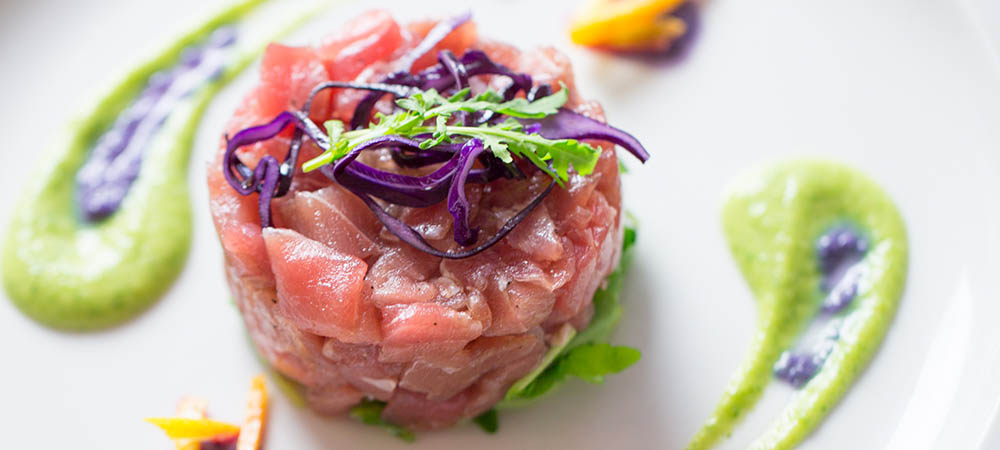
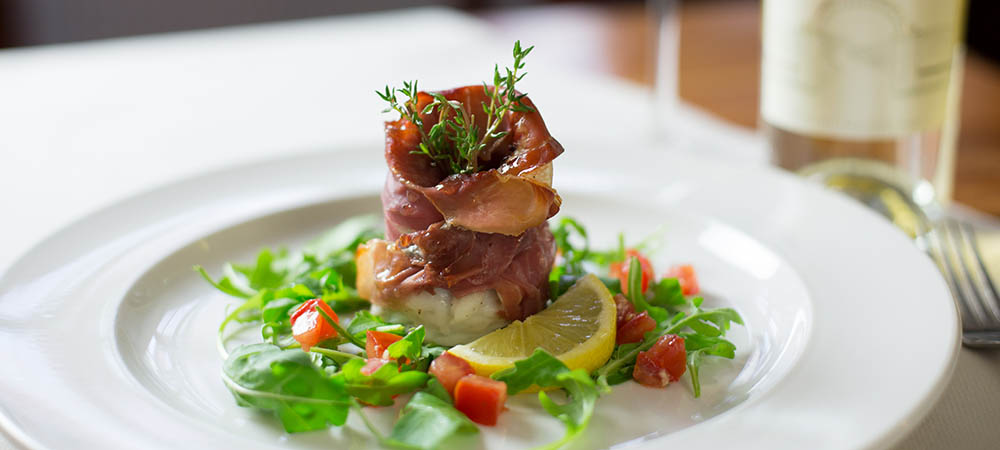

Ristorante in Harderwijk, sinds 2004
Gallura
Een originele, onvervalste Italiaanse keuken met authentieke gerechten uit Sardinië. Welkom aan de Bruggestraat.
Dinsdag t/m zaterdag 17:30 - 22:00 uur



Beste klanten en vrienden,
Welkom op onze website met mooie en nieuwe gerechten om u weer te verwennen en kennis te laten maken met het heerlijke eten uit Sardinië. Gallura, waar u kunt genieten van een originele onvervalste Italiaanse keuken, met authentieke Italiaanse gerechten.
Emanuele & Celeste

Al sinds 2004 een begrip in Harderwijk
In het restaurant aan de Bruggestraat treft u een pure, op-en-top Italiaanse keuken. De Italiaanse Emanuele en zijn vrouw Celeste laten u hier graag de smaken van hun land beleven. Samen met hun team maken ze de lekkerste gerechten uit Italië voor u klaar waardoor u kunt genieten van optimale gastvrijheid.
De Italiaanse keuken staat bekend om haar verfijnde smaken en bij Gallura weten ze die als geen ander tot hun recht te laten komen. Het team, stuk voor stuk echte Italianen, bereidt gerechten vol van smaak, zonder onnodige opsmuk. De koks werken altijd met de beste en meest verse producten en dat proef je.

Zelf bereide pasta
Eigen gebakken brood, verse vis en mooi vlees
Zoals het hoort
De menukaart biedt volop keuze uit authentieke specialiteiten uit Sardinië, maar Emanuele kan ook op verzoek een speciaal gerecht voor u bereiden.
Uit de keuken van Gallura

Openingstijden
| Maandag | Gesloten |
|---|---|
| Dinsdag | 17:30 - 22:00 |
| Woensdag | 17:30 - 22:00 |
| Donderdag | 17:30 - 22:00 |
| Vrijdag | 17:30 - 22:00 |
| Zaterdag | 17:30 - 22:00 |
| Zondag | Gesloten |
Speciale gelegenheden en groepen
Op zondag en maandag zijn wij gesloten. Wel kunt u deze dagen voor speciale gelegenheden reserveren en tevens het restaurant voor groepen afhuren.
Reserveren
Als u wenst te reserveren is dit mogelijk door telefonisch contact met ons op te nemen.
Bel 0341 - 431770